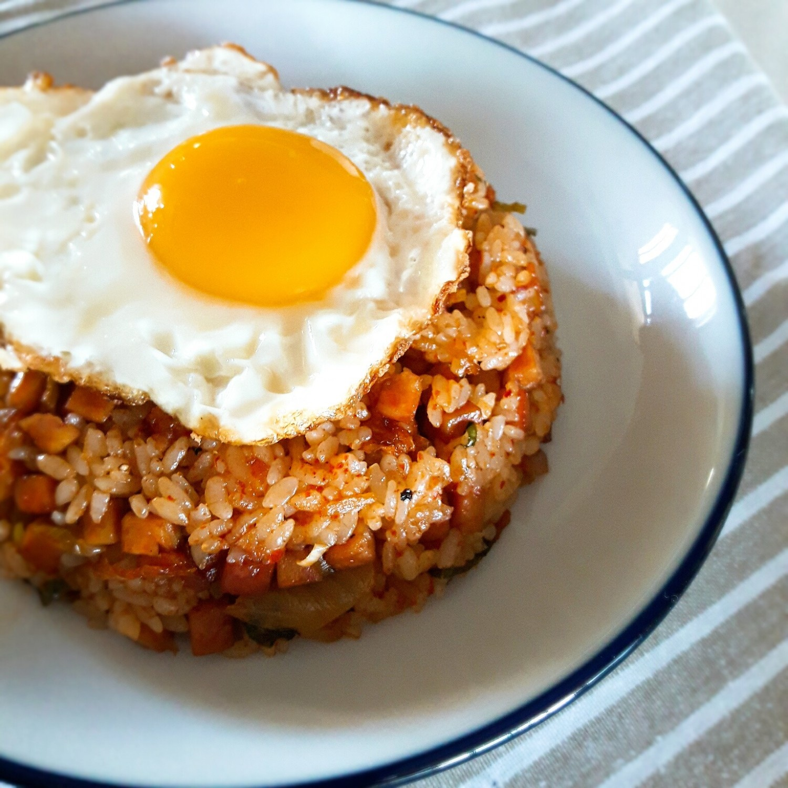
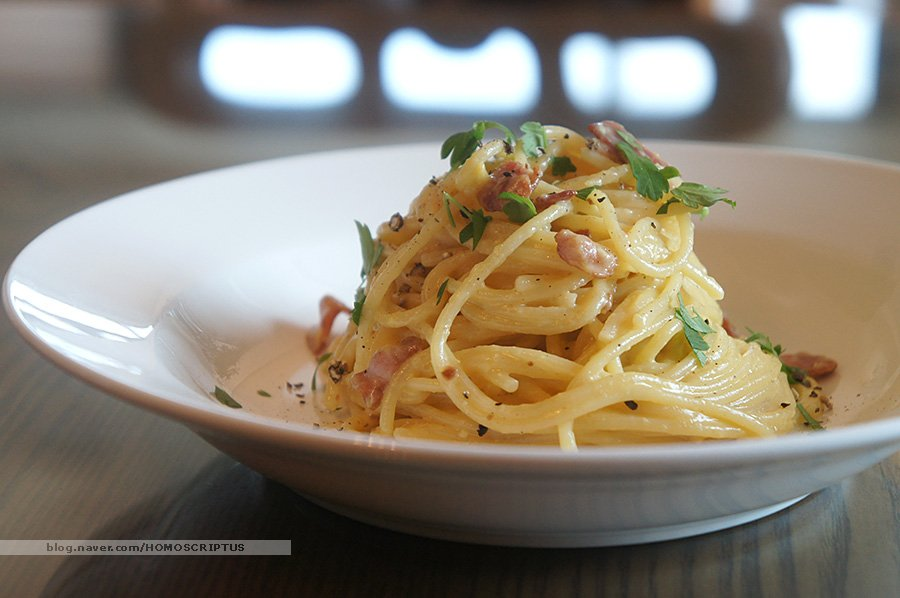
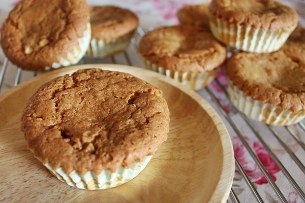
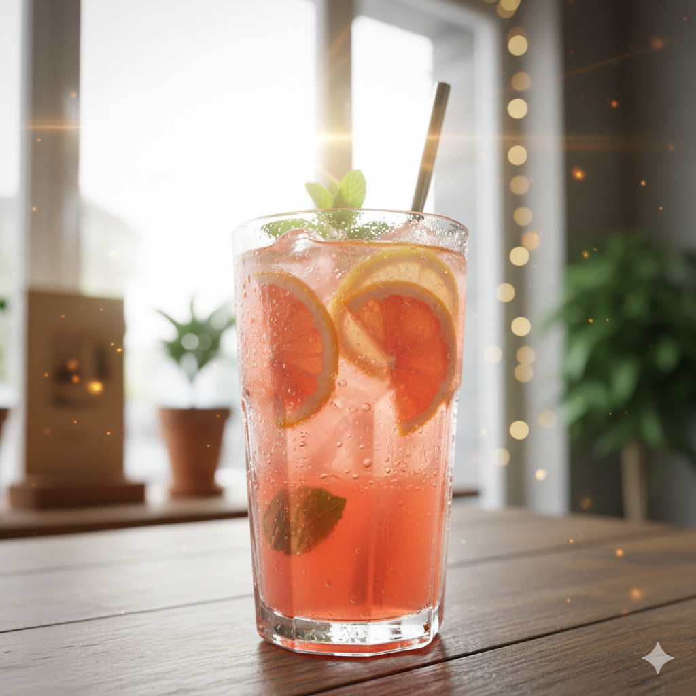
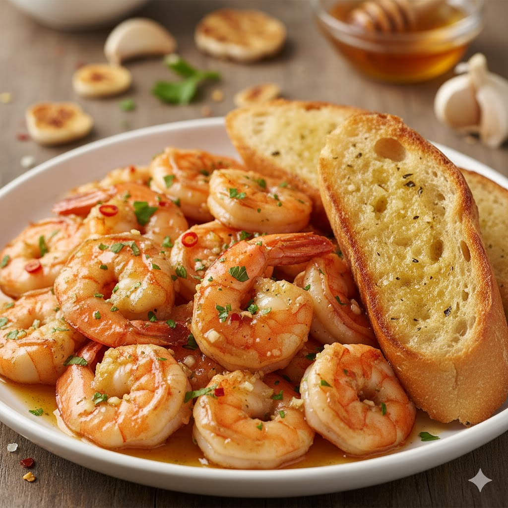
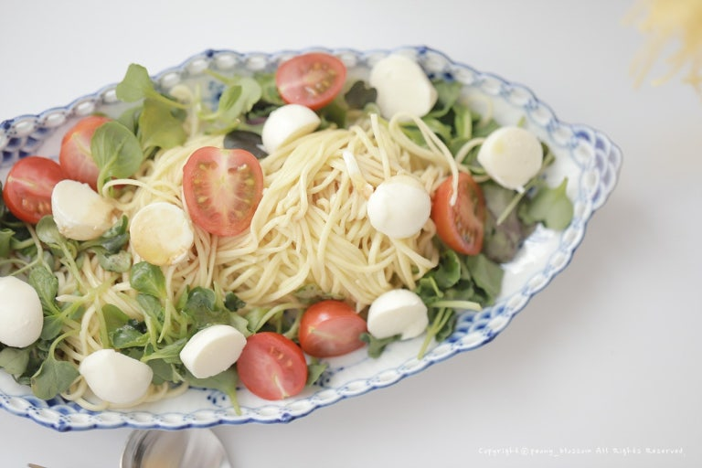
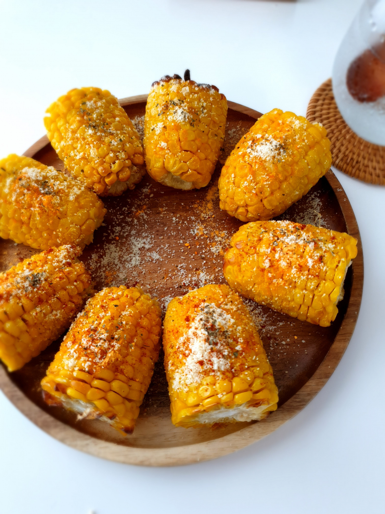

홈
레시피
등록
랭킹
마이페이지
오늘 뭐 먹지?
냠냠노트
에서 골라보세요!
카테고리별 레시피 탐색

한식

양식
중식

디저트

음료
원하는 재료로 레시피를 발견하세요!
🔍
검색
인기 레시피

달콤한 허니 버터 갈릭 쉬림프
★★★★☆ (4.5)

5분 완성! 초간단 샐러드 파스타
★★★★★ (4.9)

단짠단짠 마약 옥수수
★★★★☆ (4.3)
고급진 부채살 스테이크
★★★★★ (4.8)
더보기 →
맨 위로 ↑